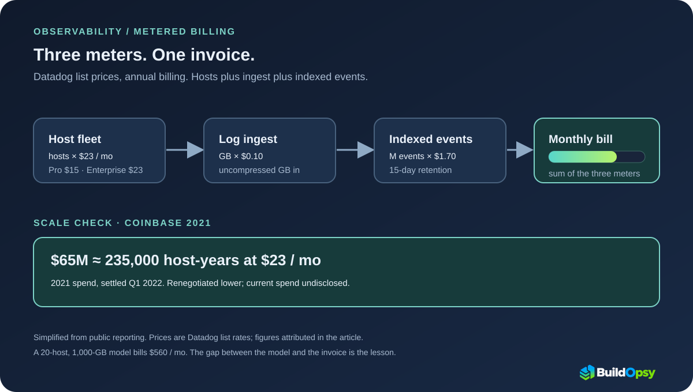

1. The Line on the Earnings Call That Priced an Industry
On May 4, 2023, Datadog reported first-quarter billings of $511 million, up 15 percent year over year, with an asterisk: a large upfront customer bill from Q1 2022 had not recurred at the same level or timing. On the call, JPMorgan's Mark Murphy did the arithmetic out loud and arrived at about $65 million. Datadog's CFO confirmed the shape without naming the name: a crypto company, an early optimizer, a restructured contract billed in smaller chunks going forward.
The name came a week later. Gergely Orosz, writing as the Pragmatic Engineer, confirmed through current and former Coinbase engineers that the $65 million was Coinbase's Datadog bill for 2021, settled in the first quarter of 2022. Coinbase itself never confirmed it directly, and Datadog never named the customer. The identification rests on Orosz's sourcing, and a customer profile — a crypto business whose revenue collapsed in 2022 — that fits exactly one company at that scale.
2. The Architecture of the Meter
Observability vendors do not sell one meter. They sell three, and each compounds differently. Datadog's current list prices show the shape: Infrastructure monitoring at $15 per host per month on Pro or $23 on Enterprise with annual billing; log ingest at $0.10 per ingested gigabyte; standard log indexing at $1.70 per million events with 15-day retention; APM starting at $31 per host per month. Every product line has its own unit, its own allotment, and its own overage behavior.
The compounding is the point. Hosts grow with the fleet. Ingested gigabytes grow with log verbosity times retention pressure. Indexed events grow with cardinality: every new tag value on a custom metric mints billable series, and custom metrics beyond the per-host allotment bill by usage. A team that adds hosts, ships verbose logs, and tags everything has tripled its bill three independent ways before writing a single alert.
The small-scale version runs in the Observability Cost Calculator: 20 hosts at $23 and 1,000 GB of ingest at $0.10 total $560 a month. At that rate, the $65 million invoice represents about nine millennia of the model. The gap between the model and the invoice is the lesson of this file.

3. How 2021 Produced That Number
Coinbase went public in the spring of 2021, and in the quarters that followed, infrastructure cost was not a constraint anyone enforced. Reporting describes a company where growth was the only metric: AWS, Snowflake, and Datadog bills all ballooned while revenue covered everything. A $65 million observability bill is what happens when each of the three meters runs at startup speed with nobody assigned to watch any of them.
Then the crypto market cooled through 2022, revenue fell sharply, and the bills that growth had hidden became the agenda. Datadog's CFO described the pattern plainly on the call: a customer whose business was cut to a third or a quarter gets its contract restructured, because the vendor would rather be part of the solution than part of the problem. The $65 million was lumpy, upfront, and unrepeated — a single year's unconstrained metering, billed at once.
Do not read this as one company's exotic failure. An observability vendor CEO told The New Stack that annual observability bills above $10 million are not rare among large companies. Coinbase is the documented extreme of a common shape: metered telemetry priced against a growth budget, discovered during a downturn.
4. The Build-vs-Buy Math
Coinbase's response was to price the alternative. The company spun up a dedicated observability team with a mandate to move onto Grafana, Prometheus, and ClickHouse — chosen first for control and ownership of a competitive differentiator, with cost as the second motive once the market turned. The team double-wrote the new stack for months, confirming behavior before cutting over anything.
Orosz's arithmetic is the whole argument in one line: ten senior and staff engineers in the Bay Area cost under $5 million a year, with infrastructure on top in the low double-digit millions. Against a $65 million annual bill, building in-house is not even a close call. Against a well-managed $2 million bill, it is a distraction that hires a team to maintain dashboards. The breakeven moves with the invoice, which is why the invoice must be measured before the decision.
hosts × rate × 12 + GB × ingest price × 12 + M events × index price × 12, then compare against a staffed open-source team and its infrastructure. Rerun the metered half in the Observability Cost Calculator. Coinbase's numbers made building obvious; most teams' numbers will not.5. Why Coinbase Stayed
Here is the twist the invoice-watchers miss: Coinbase did not leave. With the replacement stack validated and the plug ready to pull, Datadog offered terms the company could not refuse, and the future bill landed nowhere near $65 million. The customer stayed, on a restructured contract with chunked billing and economics matched to a smaller business.
Engineers discussing the episode publicly point to the reason renewal was even a contest: deep integrations — custom tracing, per-service instrumentation, organization-wide dashboards — make migration genuinely expensive, whatever the license math says. That lock-in cuts both ways. It gave Coinbase leverage for a steep discount, and it gave Datadog a retained logo. Price the exit before threatening it, or the threat is theater.
One caution about the record: anonymous commenters claimed the $65 million covered a multi-year prepayment, a detail Orosz could not verify. It is excluded from this teardown. What is documented is the single-year bill, the settlement quarter, and the renegotiation. The rest is thread speculation.
6. What to Steal
First, budget tag cardinality like headcount. Custom metrics beyond the per-host allotment bill by usage, and every new tag value mints series. Audit which teams emit the most series per host before buying more hosts.
Second, tier retention by access pattern. Frequently investigated logs earn standard indexing with alerting; everything else belongs in cheaper long-term tiers or archives with rehydration on demand. Retention is the quietest multiplier on the invoice.
Third, sample traces and meter the sample. Full-fidelity tracing on every request is the fastest route to a second invoice hiding inside the first. Decide the sampling rate as a cost input, not a debugging afterthought.
Fourth, alert on ingest slope, not just the total. Gigabytes per day times price per gigabyte, tracked against the monthly commit, turns the bill into a metric the on-call owns. A meter nobody watches is a meter without a limit.
Fifth, assign the bill to the teams that generate it. Chargeback by service or team converts "observability is expensive" into named owners with named levers. Coinbase assigned a whole team to the problem; most companies need only to assign the invoice.
7. The Postmortem Verdict
Three clocks ran in this story: the meters compounded through 2021, the $65 million came due in Q1 2022, and the renegotiation reset the economics after that. Treating any one of them as "the Datadog incident" misses how metered billing actually fails — slowly, across three independent units, discovered only when growth stops covering it.
The disclosure that matters is not the number but the mechanism it exposed: per-host, per-GB, and per-event pricing turns every scaling decision into a billing decision, whether or not anyone attends the meeting. Until metering has an owner, a budget, and an alert, the invoice is just a matter of time. Coinbase's number was $65 million. Yours will be smaller and arrive the same way.
Three meters. No owner. One $65 million invoice.
Sources and Method
The $65M figure, 2021 spend year, Q1 2022 settlement, in-house team plan, and renegotiation come from Pragmatic Engineer reporting confirmed with Coinbase engineers, and Datadog's Q1 2023 earnings call as covered by The New Stack. List prices are Datadog's published annual rates as fetched in October 2026. The $560 model is the default output of the linked Buildopsy calculator. Practitioner lock-in commentary reflects public engineering discussion, not vendor statements.